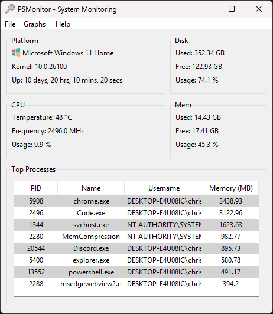

PSMonitor - A simple system monitoring utility.
Download PSMonitor
Track and manage your system health in real-time. Lightweight, modern, and includes remote monitoring out of the box.
More Downloads:


Track and manage your system health in real-time. Lightweight, modern, and includes remote monitoring out of the box.
More Downloads:
Track CPU, memory, disk, top processes by usage and more useful metrics in real time.
Headless server enables monitoring remotely. Also available as a separate download.
No bloat. Minimal CPU/memory footprint. Perfect for servers laptops and small devices alike.
PSMonitor stores its configuration settings in a JSON file located at
%USERPROFILE%/.psmonitor/settings.json.
If the file does not exist when the application starts, PSMonitor automatically creates it with a full set of default values. This ensures the application is ready to run out of the box without requiring manual configuration.
%USERPROFILE%/.psmonitor-logs.
PSMonitor features a set of real-time system graphs that visually display key performance metrics including CPU temperature, CPU usage, and memory consumption. Each graph updates at a regular interval defined in the settings, providing a continuous view of current system load.
These graphs help users quickly identify performance bottlenecks or abnormal spikes in resource usage, and are especially useful for tracking system behavior over time during intensive tasks or remote monitoring scenarios.
PSMonitor includes a built-in web-based user interface that runs on the same address and port as the embedded WebSocket server. This interface provides a lightweight, read-only view of system statistics, making it ideal for remote monitoring or headless environments.
It is particularly useful for testing connectivity or accessing monitoring data from another device on the network. The Web UI can be launched directly from the desktop application via the File > Open Web UI menu option, which opens the interface in the default browser.